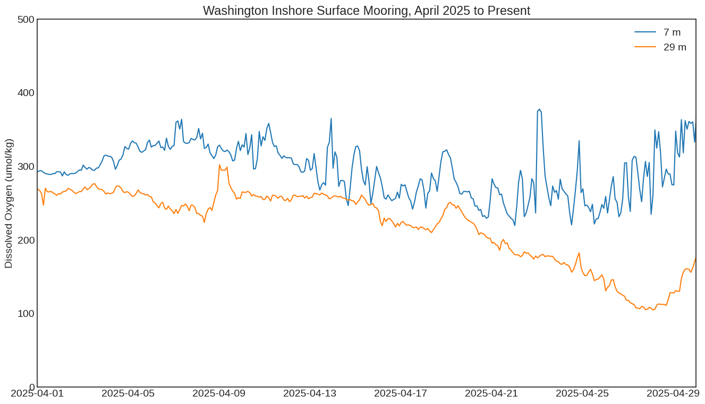
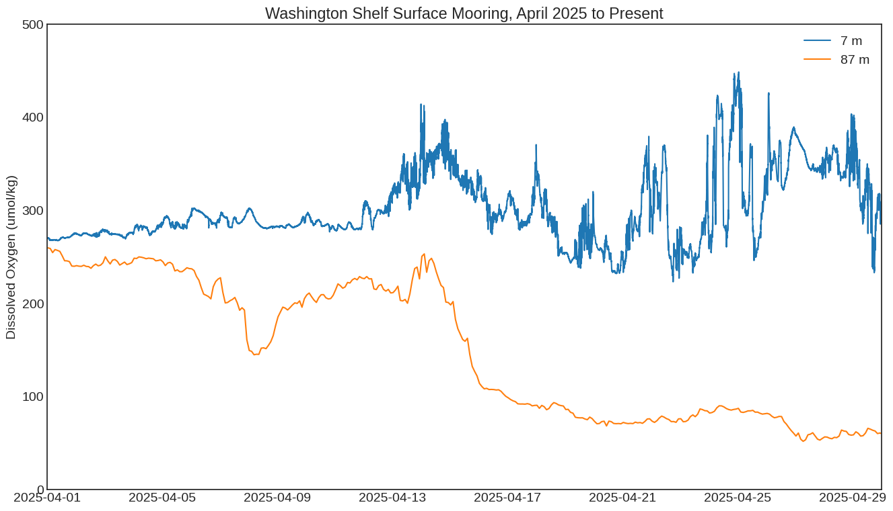

import datetime
import os
from matplotlib import pyplot as plt
plt.style.use('seaborn-v0_8-white')
from ooi_data_explorations.common import list_deployments, get_deployment_dates, get_vocabulary, m2m_request, \
m2m_collect, update_dataset, CONFIG, ENCODINGS
from ooi_data_explorations.uncabled.process_dosta import dosta_ctdbp_datalogger, dosta_datalogger
import warnings
warnings.filterwarnings('ignore')
# Setup needed parameters for the request for CE06ISSM
site = 'CE06ISSM' # OOI Net site designator
node = 'RID16' # OOI Net node designator
sensor = '03-DOSTAD000' # OOI Net sensor designator
stream = 'dosta_abcdjm_ctdbp_dcl_instrument' # OOI Net stream name
method = 'telemetered' # OOI Net data delivery method
# Set the start date to June 1, 2020. Leaving the stop date empty will request through the end of the record.
start = '2025-04-01T00:00:00.000Z' # explicit date/time format required for M2M requests
# request the data
r = m2m_request(site, node, sensor, method, stream, start)
Requesting:
refdes: CE06ISSM-RID16-03-DOSTAD000
method: telemetered
stream: dosta_abcdjm_ctdbp_dcl_instrument
from 2025-04-01T00:00:00.000Z to None
Waiting for OOINet to process and prepare data request, this may take up to 20 minutes.
Waiting: 100%|██████████| 400/400 [04:30<00:00, 1.48it/s]
# collect and download the DOSTA data from the NSIF in an xarray dataset
nsif06 = m2m_collect(r, '.*DOSTA.*\\.nc$')
Downloading 1 data file(s) from the users OOI M2M THREDDS catalog
Downloading and Processing the Data Files: 100%|██████████| 1/1 [00:01<00:00, 1.96s/it]
Merging the data files into a single dataset
# CE06ISSM MFN
r = m2m_request(site, 'MFD37', sensor, method, stream, start)
mfn06 = m2m_collect(r, '.*DOSTA.*\\.nc$')
# CE07SHSM NSIF
r = m2m_request('CE07SHSM', 'RID27', '04-DOSTAD000', method, 'dosta_abcdjm_dcl_instrument', start)
nsif07 = m2m_collect(r, '.*DOSTA.*\\.nc$')
# CE07SHSM MFN
r = m2m_request('CE07SHSM', 'MFD37', sensor, method, stream, start)
mfn07 = m2m_collect(r, '.*DOSTA.*\\.nc$')
Requesting:
refdes: CE06ISSM-MFD37-03-DOSTAD000
method: telemetered
stream: dosta_abcdjm_ctdbp_dcl_instrument
from 2025-04-01T00:00:00.000Z to None
Waiting for OOINet to process and prepare data request, this may take up to 20 minutes.
Waiting: 100%|██████████| 400/400 [04:00<00:00, 1.66it/s]
Downloading 1 data file(s) from the users OOI M2M THREDDS catalog
Downloading and Processing the Data Files: 100%|██████████| 1/1 [00:00<00:00, 2.79it/s]
Merging the data files into a single dataset
Requesting:
refdes: CE07SHSM-RID27-04-DOSTAD000
method: telemetered
stream: dosta_abcdjm_dcl_instrument
from 2025-04-01T00:00:00.000Z to None
Waiting for OOINet to process and prepare data request, this may take up to 20 minutes.
Waiting: 100%|██████████| 400/400 [04:30<00:00, 1.48it/s]
Downloading 1 data file(s) from the users OOI M2M THREDDS catalog
Downloading and Processing the Data Files: 100%|██████████| 1/1 [00:01<00:00, 1.84s/it]
Merging the data files into a single dataset
Requesting:
refdes: CE07SHSM-MFD37-03-DOSTAD000
method: telemetered
stream: dosta_abcdjm_ctdbp_dcl_instrument
from 2025-04-01T00:00:00.000Z to None
Waiting for OOINet to process and prepare data request, this may take up to 20 minutes.
Waiting: 100%|██████████| 400/400 [03:30<00:00, 1.90it/s]
Downloading 1 data file(s) from the users OOI M2M THREDDS catalog
Downloading and Processing the Data Files: 100%|██████████| 1/1 [00:00<00:00, 2.80it/s]
Merging the data files into a single dataset
plt.figure(figsize=(16,9))
plt.rcParams.update({'font.size': 14})
plt.plot(nsif06.time, nsif06.dissolved_oxygen, label='7 m')
plt.plot(mfn06.time, mfn06.dissolved_oxygen, label='29 m')
plt.title('Washington Inshore Surface Mooring, April 2025 to Present')
plt.ylabel('Dissolved Oxygen (umol/kg)')
plt.xlim(datetime.date(2025, 4, 1), datetime.date(2025, 4, 30))
plt.ylim(0, 500)
plt.legend()
plt.show()

plt.figure(figsize=(16,9))
plt.rcParams.update({'font.size': 14})
plt.plot(nsif07.time, nsif07.dissolved_oxygen, label='7 m')
plt.plot(mfn07.time, mfn07.dissolved_oxygen, label='87 m')
plt.title('Washington Shelf Surface Mooring, April 2025 to Present')
plt.ylabel('Dissolved Oxygen (umol/kg)')
plt.xlim(datetime.date(2025, 4, 1), datetime.date(2025, 4, 30))
plt.ylim(0, 500)
plt.legend()
plt.show()

def save_dosta(ds, site, level, instrmt):
home = os.path.expanduser('~')
m2m_base = os.path.abspath(os.path.join(home, 'ooidata/m2m'))
out_path = os.path.join(m2m_base, site, level, instrmt)
if not os.path.exists(out_path):
os.makedirs(out_path)
out_file = ('%s.%s.%s.Summer2020.nc' % (site, level, instrmt))
nc_out = os.path.join(out_path, out_file)
ds.to_netcdf(nc_out, mode='w', format='NETCDF4', engine='h5netcdf', encoding=ENCODINGS)
# clean up, update and save the datasets -- CE06ISSM
nsif06 = dosta_ctdbp_datalogger(nsif06)
nsif06 = update_dataset(nsif06, 7)
save_dosta(nsif06, 'ce06issm', 'nsif', 'dosta')
mfn06 = dosta_ctdbp_datalogger(mfn06)
mfn06 = update_dataset(mfn06, 29)
save_dosta(mfn06, 'ce06issm', 'seafloor', 'dosta')
# clean up, update and save the datasets -- CE07SHSM
nsif07 = dosta_datalogger(nsif07, burst=False)
nsif07 = update_dataset(nsif07, 7)
save_dosta(nsif07, 'ce07shsm', 'nsif', 'dosta')
mfn07 = dosta_ctdbp_datalogger(mfn07)
mfn07 = update_dataset(mfn07, 87)
save_dosta(mfn07, 'ce07shsm', 'seafloor', 'dosta')